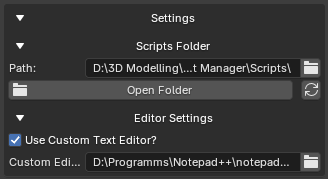

Editor Settings¶
The Editor Settings section controls how scripts are opened for editing.
You can use it to:
- Enable a custom external editor
- Set the path to your preferred editor
- Open newly created scripts automatically
- Edit existing scripts from the Selected Script panel

Editor Settings Panel
Use Custom Text Editor¶
The Use Custom Text Editor? option enables or disables a custom external editor.
When enabled, GH Script Manager will try to open scripts using the editor specified in Custom Editor Path.
When disabled, GH Script Manager will use the default available system editor.
Custom Editor Path¶
The Custom Editor Path field stores the path to the editor executable.
Example:
C:\Program Files\Microsoft VS Code\Code.exe
Another example:
C:\Program Files\Notepad++\notepad++.exe
On macOS, .app applications are also supported.
Example:
/Applications/Visual Studio Code.app
Opening Scripts With a Custom Editor¶
When Use Custom Text Editor? is enabled and the editor path is valid:
- Newly created scripts open automatically in the custom editor
- Existing scripts open in the custom editor when pressing Edit
Example workflow:
Create Script
↓
GH Script Manager creates the .py file
↓
Custom editor opens automatically
Invalid Custom Editor Path¶
If the custom editor path is invalid or the editor cannot be found, the script will not open with the custom editor.
When creating a new script, GH Script Manager will show an error message if the custom editor is enabled but cannot be found.
Example:
Custom editor not found. Check path in Editor Settings.
Default Editor Behavior¶
If Use Custom Text Editor? is disabled, GH Script Manager uses the default available editor for your operating system.
Examples:
| Platform | Default Behavior |
|---|---|
| Windows | Opens with Notepad |
| macOS | Opens with TextEdit |
| Linux | Tries common installed editors or the default system opener |
If no supported system editor is available, the script can be opened in Blender's Text Editor as a fallback.
Editing Existing Scripts¶
To edit an existing script:
- Open Available Scripts
- Select a script
- Click Edit
The script will open using the configured editor behavior.
If a valid custom editor is enabled, it will be used.
If not, GH Script Manager will use the default available editor.
Saved Preferences¶
Editor settings are saved automatically.
Saved values include:
- Whether the custom editor is enabled
- The custom editor path
No manual saving is required.
The settings are restored when Blender is restarted.
Recommended Setup¶
A common setup is to use Visual Studio Code as the custom editor.
Example:
Use Custom Text Editor: Enabled
Custom Editor Path:
C:\Program Files\Microsoft VS Code\Code.exe
This allows scripts to be managed from Blender while editing them in a full code editor.
Notes¶
The editor path must point to a valid executable or supported application.
If you move, uninstall, or update your editor, you may need to update the path in GH Script Manager.